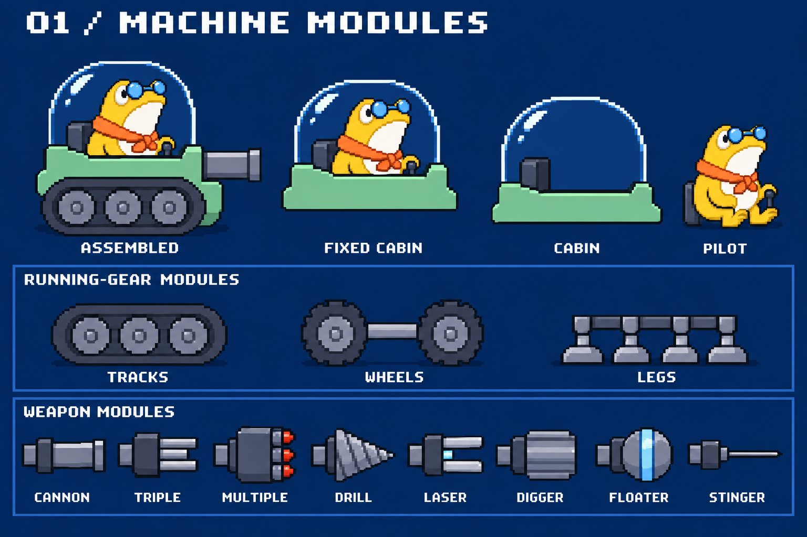
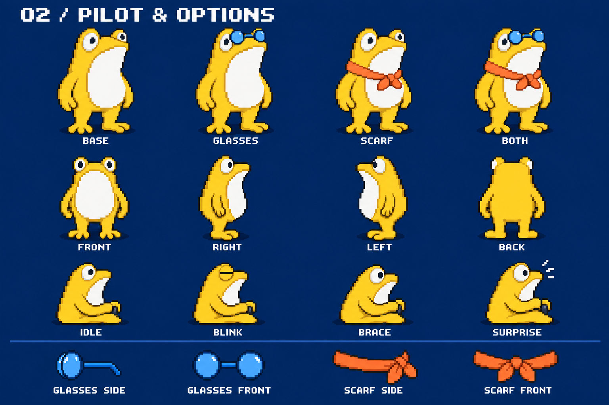
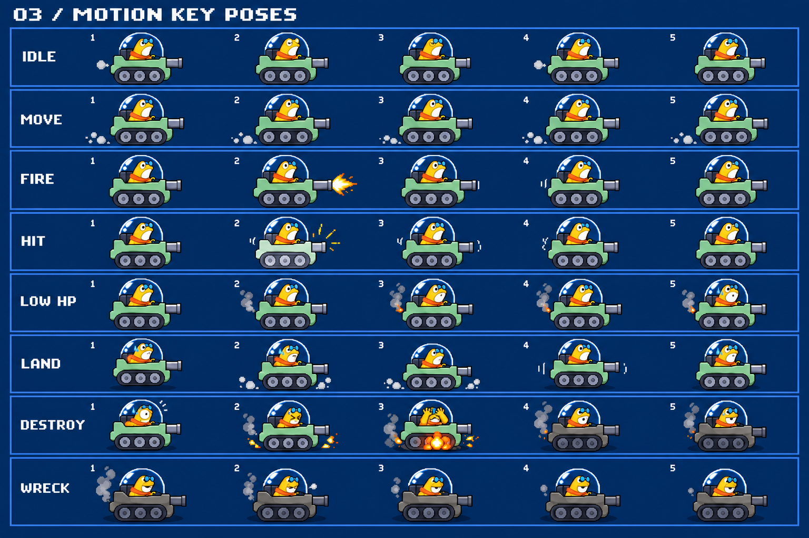
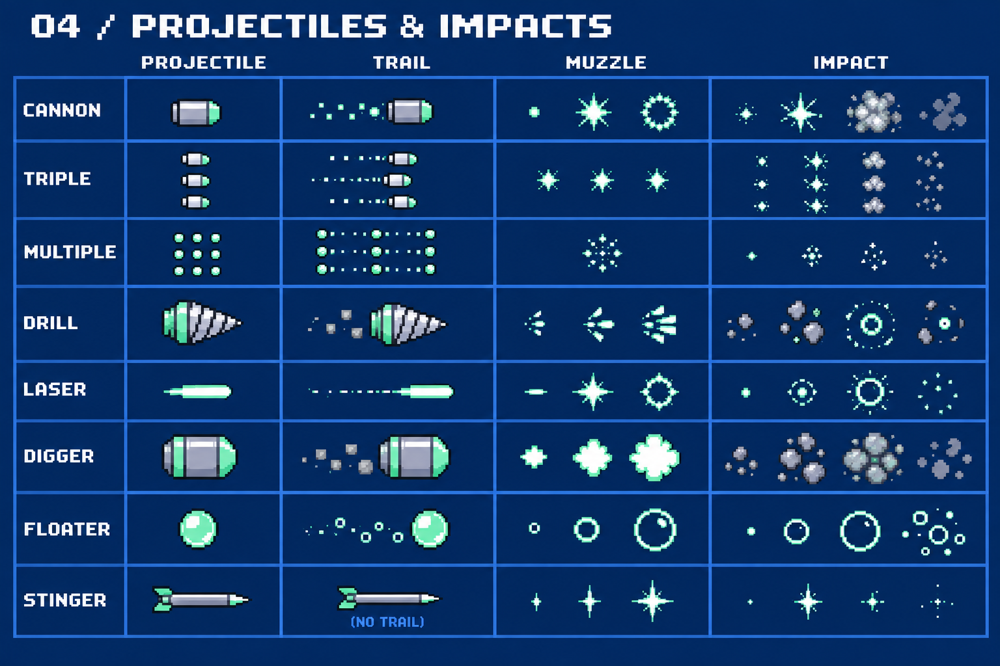

ひとつの本体に、
キャラクターと装備の個性を。
真横のマシンを基準に、必要なパーツ・姿勢・エフェクトを4枚で確認するプレビュー。画像を押すと原寸で開きます。
静止画のデザイン見本です。各コマを切り抜くだけで再生できる完成スプライトではありません。透過・レイヤー分離・接続位置・実際の対戦サイズは、素材化の段階で揃えます。
01 / 固定本体と交換パーツ
共通 × 差し替えキャノピー・台座・座席は共通。本体の形状は一つに固定し、足回り・武器・搭乗者を独立して組み合わせます。車輪と機械脚は追加候補です。

02 / キャラクターとオプション
初期種：カエル素体・メガネ・スカーフを別々に扱います。別の種には、その種の素体・表情・搭乗姿勢・装備接続点を用意し、共通キャノピーに収めます。

03 / モーションの使い分け
行＝状態、列＝動きの流れ1〜5は動きの要所です。均等な時間で5枚を再生する指定ではありません。固定本体を共通にし、足回り・砲身・キャラクター・VFXを別々に動かします。

| 行 | 使う場面 | 再生・終了 |
|---|---|---|
| IDLE / 待機 | 停止中 | 瞬き・小さい上下動を繰り返す。 |
| MOVE / 移動 | 地上移動中 | 駆動部を移動距離に同期。停止時は止める。 |
| FIRE / 発射 | 各弾の発射時刻 | 発射光→反動→復帰を1回。連射でも変位を積み上げない。 |
| HIT / 被弾 | 実際にダメージを受けた時 | フラッシュ→振動→復帰を1回。 |
| LOW HP / 低HP | HPが残り少ない間 | 不安な目・煙へ視線・肩をすくめる。煙と火花は移動・発射にも重ねる。 |
| LAND / 着地 | 落下して接地した時 | 接地→沈み→揺り戻し→通常姿勢を1回。 |
| DESTROY / 大破 | HPが0になった時 | 驚く→目を閉じて頭をかばう→様子を見る。機体の大破と同期し1回だけ。 |
| WRECK / 残骸 | 大破後 | 頭と肩を落としてしょんぼり。ため息の後は落胆した姿勢を維持する。 |
大破後もキャラクターが座っている表現は仮案です。脱出などの退場方式は未決定。LOW HPの仮境界はHP25%以下です。
04 / 砲弾と発射・着弾エフェクト
既存8武器左から「砲弾」「尾」「発射光」「着弾」です。通常弾・連射・貫通・レーザー・掘削・浮遊・針弾の見え方を揃えています。

針弾は尾なし。レーザーは瞬時に届く線ではなく飛行する光弾。見本のミント色は、実装では撃ったプレイヤーの主色へ対応させます。
制作範囲と、次の仕上げ
今回の見本で確認するもの
固定本体、足回り候補、8武器、カエル素体と四方向、オプション、搭乗姿勢、待機・移動・発射・被弾・低HP・着地・大破・残骸、砲弾・尾・発射光・着弾、煙・土煙・火花。
素材化で補うもの
透過とpalette、共通本体の厳密な形の統一、左右・姿勢別の装備、歩行の中間コマ、単体の煙や破片、外れの印、車輪・脚固有の駆動ループ、色替え全組み合わせ。見本画像の文字や背景はゲーム素材に含めません。
将来の追加単位
キャラクター種＝素体・姿勢・表情・装備位置。足回り＝駆動部・移動ループ・残骸。武器＝本体・砲弾・発射・着弾。本体はどの追加でも共通です。新武器のゲームルールや課金方式は別途設計します。